Regression comparison
Download resultsAggregation weights
\widehat y(x)=y_{\rm mean}+y_{\rm std}\sum_{h=1}^{H}\beta_h\mu_h(x)Coefficients can be negative and need not sum to one. Intervals describe coefficient uncertainty; the dashed reference is DE’s fixed 1/H weight.
BDKN

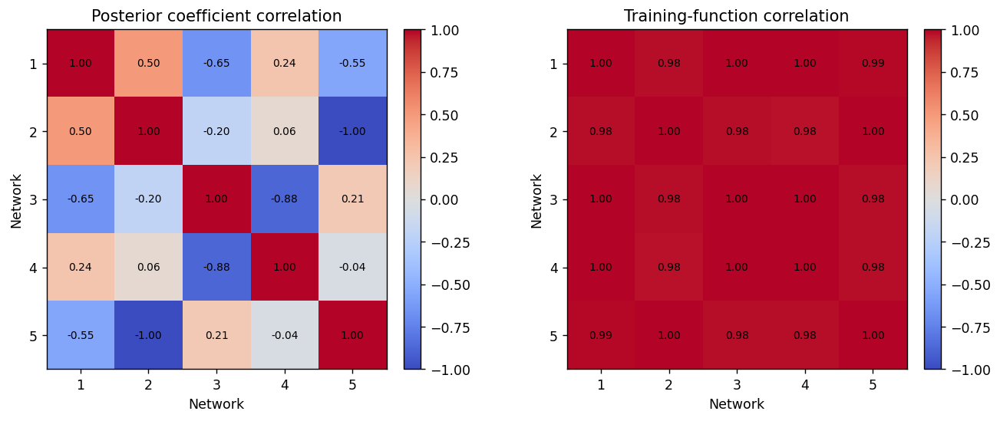


Each density panel uses its own X range for readability; coefficient intervals above share a common axis. Prior reference conditions on fitted noise. Contribution shares use held-out inputs; test targets are used only for scoring.
| Network | β mean | 95% low | 95% high | P(β > 0) | Contribution share | Test RMSE | Test NLL |
|---|---|---|---|---|---|---|---|
| 1 | 0.04436 | -0.25239 | 0.34112 | 0.62081 | 0.02077 | 2.77758 | 1690.98373 |
| 2 | -0.44101 | -0.90097 | 0.01895 | 0.02963 | 0.20503 | 4.14137 | 2585.39364 |
| 3 | -0.04979 | -0.52027 | 0.42070 | 0.41376 | 0.02849 | 2.11616 | 3948.29119 |
| 4 | 0.96865 | 0.63295 | 1.30434 | 1.00000 | 0.53969 | 1.93914 | 2182.53233 |
| 5 | 0.47701 | -0.05980 | 1.01383 | 0.96070 | 0.20602 | 3.77514 | 19156.44097 |
Functional repulsion · BDKN
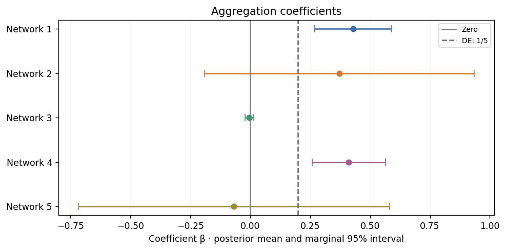
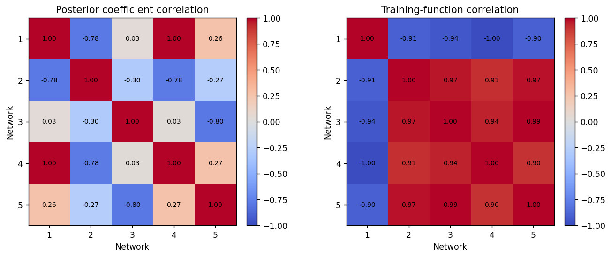
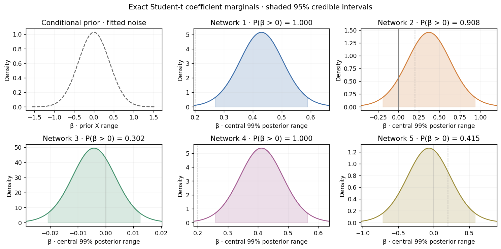
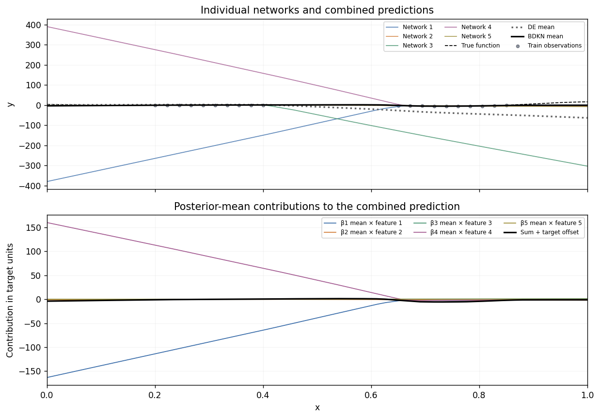
Each density panel uses its own X range for readability; coefficient intervals above share a common axis. Prior reference conditions on fitted noise. Contribution shares use held-out inputs; test targets are used only for scoring.
| Network | β mean | 95% low | 95% high | P(β > 0) | Contribution share | Test RMSE | Test NLL |
|---|---|---|---|---|---|---|---|
| 1 | 0.42967 | 0.26997 | 0.58937 | 0.99999 | 0.49322 | 173.11130 | 43.37435 |
| 2 | 0.37216 | -0.19130 | 0.93561 | 0.90825 | 0.00835 | 5.78016 | 3840.17998 |
| 3 | -0.00420 | -0.02080 | 0.01239 | 0.30152 | 0.00389 | 142.07172 | 11.75731 |
| 4 | 0.41120 | 0.25836 | 0.56404 | 0.99999 | 0.49290 | 179.42958 | 16.90034 |
| 5 | -0.06789 | -0.71688 | 0.58109 | 0.41473 | 0.00165 | 6.56180 | 827.85310 |
Weight repulsion · BDKN
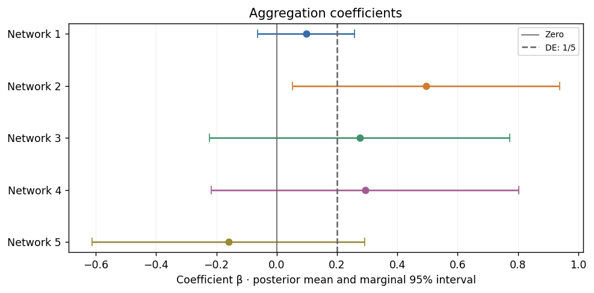
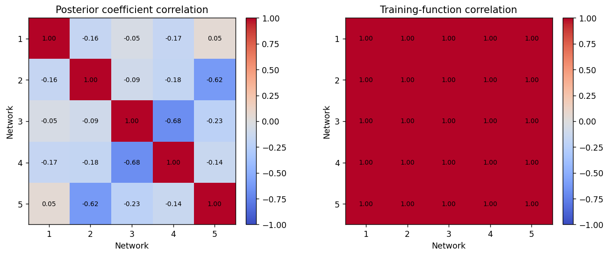
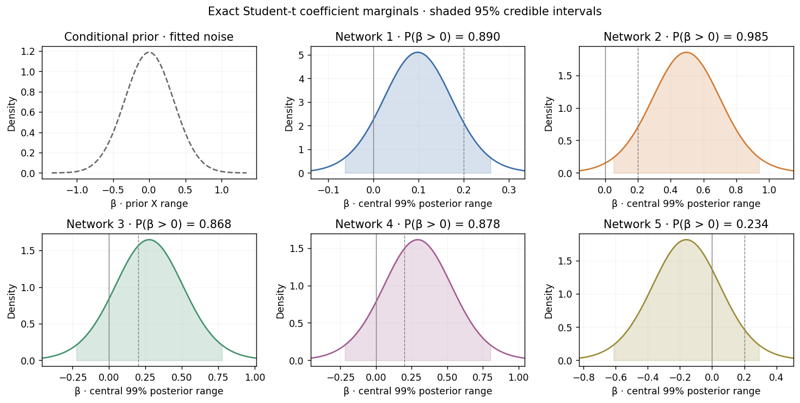
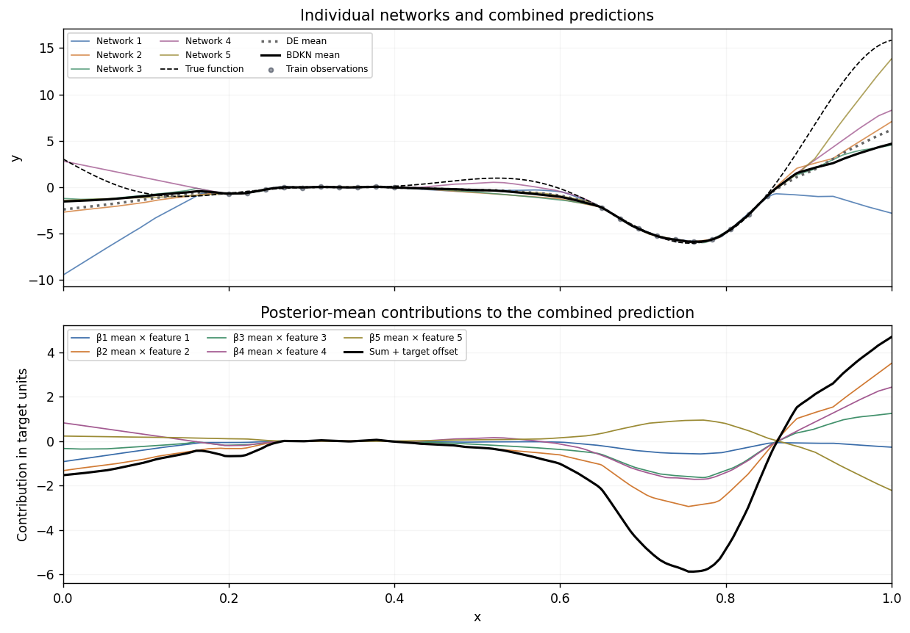
Each density panel uses its own X range for readability; coefficient intervals above share a common axis. Prior reference conditions on fitted noise. Contribution shares use held-out inputs; test targets are used only for scoring.
| Network | β mean | 95% low | 95% high | P(β > 0) | Contribution share | Test RMSE | Test NLL |
|---|---|---|---|---|---|---|---|
| 1 | 0.09773 | -0.06327 | 0.25873 | 0.89001 | 0.07887 | 5.11266 | 4387.25496 |
| 2 | 0.49543 | 0.05205 | 0.93882 | 0.98483 | 0.38268 | 2.68545 | 677.78790 |
| 3 | 0.27486 | -0.22389 | 0.77361 | 0.86806 | 0.18465 | 2.91439 | 130069.84698 |
| 4 | 0.29280 | -0.21708 | 0.80268 | 0.87752 | 0.21807 | 2.12010 | 665.58285 |
| 5 | -0.16014 | -0.61196 | 0.29168 | 0.23415 | 0.13573 | 1.51423 | 86047.22048 |
First-order repulsion · BDKN
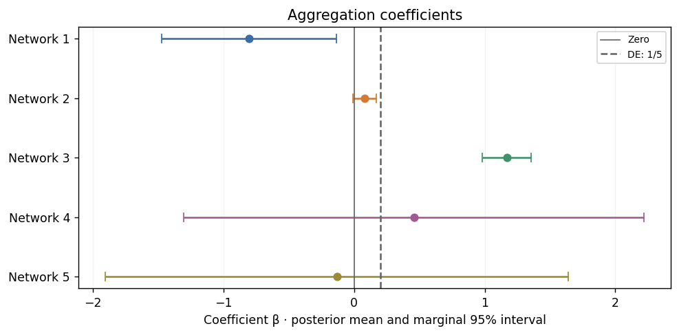
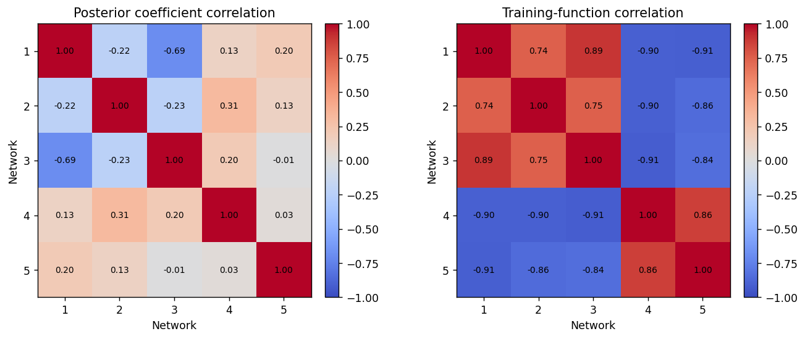
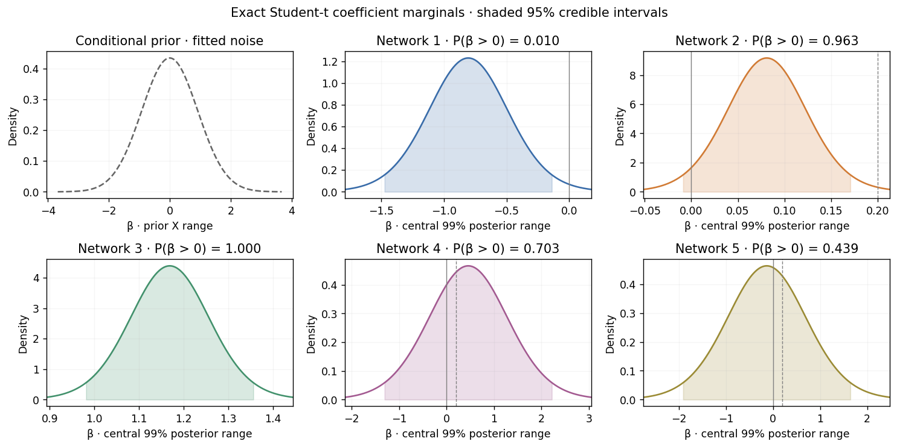
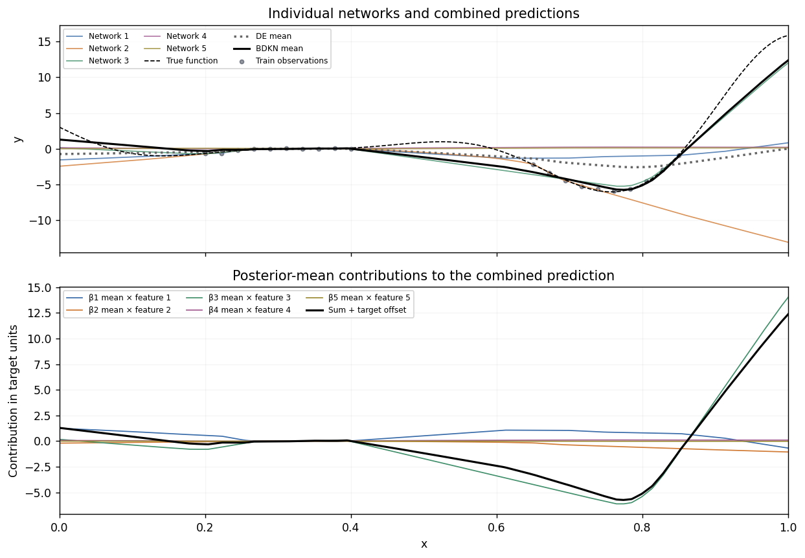
Each density panel uses its own X range for readability; coefficient intervals above share a common axis. Prior reference conditions on fitted noise. Contribution shares use held-out inputs; test targets are used only for scoring.
| Network | β mean | 95% low | 95% high | P(β > 0) | Contribution share | Test RMSE | Test NLL |
|---|---|---|---|---|---|---|---|
| 1 | -0.80572 | -1.47295 | -0.13848 | 0.01020 | 0.16536 | 4.31240 | 9432.66409 |
| 2 | 0.08097 | -0.00867 | 0.17062 | 0.96292 | 0.08017 | 8.27953 | 5694.09142 |
| 3 | 1.16892 | 0.98166 | 1.35618 | 1.00000 | 0.73467 | 1.81625 | 376269.62763 |
| 4 | 0.45711 | -1.30639 | 2.22062 | 0.70266 | 0.01729 | 4.48644 | 2.22184 |
| 5 | -0.13150 | -1.90438 | 1.64139 | 0.43930 | 0.00251 | 4.49194 | 2.84990 |